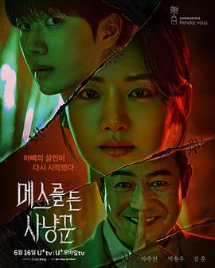

5.7
拿着手术刀的猎人
Hunter with a Scalpel
2025
韩国
评分 5.7
导演:
李政勋
演员:
姜勋 / 朴柱炫
类型:
惊悚,犯罪
剧情简介
夜色笼罩的首尔，法医研究院的地下室灯光微弱，宋律珍（朴柱炫 饰）站在尸检台前，手中的手术刀保持着绝对的稳定。她是国内最年轻也最具争议的法医之一，天赋卓绝，却因为童年创伤与反社会人格，被同僚视为“危险的天才”。多年前，她亲眼目睹父亲被谋杀，那段记忆碎裂如镜，一直潜伏在她的潜意识深处。当旧案再次浮现、证据被恶意篡改，她成为舆论追逐的对象，也成了某个阴影中人的“猎物”。警察郑正铉（姜勋 饰）是完全不同的存在——他相信人性本善，也相信每个犯罪现场都留下真相的痕迹。一次意外的案件合作让他卷入律珍的世界：她冷静、疏离、像解剖一样精准地判断人心；他直觉敏锐、富有同理心，试图理解她所有的矛盾与恐惧。两人既是搭档，也是彼此的试炼。案件愈发复杂，尸体上的切口、消失的证人、被伪造的法医报告，都指向同一个真相：有人熟知律珍的过去，并一步步逼近她。她越想保持理智，越被童年的恐惧再次拉入深渊。正铉在追查连环杀人案的过程中，也逐渐意识到——真正的凶手不仅在猎杀受害者，也在精心操纵律珍的命运。整部剧以冰冷的医学细节与压迫性的犯罪场景构成强烈对比：解剖室的金属光泽、深夜街巷的雨声、警方会议室中重叠的证据板，都让悬疑感层层加深。律珍在真相与疯狂之间摇摆，正铉是她少有的依靠，但两人的信任也不断在案件推进中受到考验。《拿着手术刀的猎人》不仅探讨杀戮与追捕，更深挖“伤害如何塑造一个人的灵魂”。当猎人与猎物的界线逐渐模糊，真正的危险往往来自最熟悉的地方。